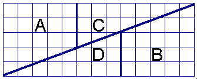
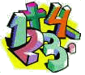

Click Here to Visit our Sponsor
The puzzles are marked with stars ( ) that show the degree of difficulty of the given puzzle.
) that show the degree of difficulty of the given puzzle.
![[BACK]](left.gif) back to the main puzzle page.
back to the main puzzle page.

i.
Notable Number
There is a unique number of which the square and the cube together use
all ciphers from 0 up to 9 exactly once.
The Question:
Which number is this?
The Answer:
 Click here!...
Click here!...
![[UP]](back.gif) back to index
back to index
ii.
Beer and Bitterballs 
![[New!]](new.gif)
On a nice summer day, two tourists visit the Dutch city of Gouda.
During their tour through the center they spot a cosy terrace.
They decide to have a drink and, as an appetizer, a portion of hot "bitterballs"
(bitterballs are a Dutch delicacy, similar to croquettes).
The waiter tells them that the bitterballs can be served in portions of 6, 9, or 20.
The Question:
What is the largest number of bitterballs that cannot be ordered in these portions?
The Answer:
Click here!...
back to index

iii.
Speedy Sums
A salesman drives from Amsterdam to The Hague.
The first half of the distance of his journey, he drives at a constant speed of 80 km/h.
The second half of the distance of his journey, he drives at a constant speed of 120 km/h.
The Question:
What is the salesman's average speed for the complete journey?
A Hint:
The solution is not 100 km/h!
The Answer:
Click here!...
Another Question:
A race car driver drove, on a 4 km long race course, at an average speed of 120 km/h for the first 2 km.
How fast does he have to go the second 2 km to average 240 km/h for the entire course?
Another Answer:
Click here!...
Yet Another Question:
Makkum and Stavoren are two villages.
Michael and Donald want to go from Makkum to Stavoren.
They leave at the same time.
Michael goes by bicycle.
Donald goes by car, which is six times as fast as Michael on his bicycle.
Unfortunately, Donald has a car breakdown half-way between Makkum and Stavoren.
Fortunately, a passing farmer gives him a lift to Stavoren on his tractor.
Unfortunately, the farmer drives only half as fast as Michael drives on his bicycle.
Who of the two arrives first in Stavoren?
Yet Another Answer:
Click here!...
back to index
iv.
Traveling Bird
Consider a road with two cars, at a distance of
100 kilometers, driving towards each other. The left car
drives at a speed of forty kilometers per hour and the right car at a
speed of sixty kilometers per hour. A bird starts at the same location
as the right car and flies at a speed of 80 kilometers per hour. When
it reaches the left car it turns its direction, and when it reaches
the right car it turns its direction again to the opposite, etcetera.

The Question:
What is the total distance that the bird has traveled at the moment that the two cars have reached each other?
The Answer:
Click here!...
back to index
v.
Cork in the Canal
A swimmer jumps from a bridge over a canal and swims
1 kilometer stream up. After that first kilometer, he passes a floating cork.
He continues swimming for half an hour and then turns around and swims back
to the bridge. The swimmer and the cork arrive at the bridge at the same time.
The swimmer has been swimming with constant speed.
The Question:
How fast does the water in the canal flow?
The Answer:
Click here!...
back to index
vi.
Square And Rectangle
The area of the square shown below is 8 x 8 = 64.
The square is cut in the four parts A, B, C, and D, which are
rearranged into the rectangle shown below. This rectangle has an area of
13 x 5 = 65.

The Question:
How can you explain the difference in area?
The Answer:
Click here!...
back to index
vii.
William's Whereabouts
William lives in a street with house-numbers 8 up to 100.
Lisa wants to know at which number William lives.
She asks him: "Is your number larger than 50?"
William answers, but lies.
Upon this, Lisa asks: "Is your number a multiple of 4?"
William answers, but lies again.
Then Lisa asks: "Is your number a square?"
William answers truthfully.
Upon this, Lisa says: "I know your number if you tell me whether the first digit is a 3."
William answers, but now we don't know whether he lies or speaks the truth.
Thereupon, Lisa says at which number she thinks William lives, but (of course) she is wrong.
The Question:
What is Williams real house-number?
The Answer:
Click here!...
back to index
viii.
The Prince and the Pearls
Long ago, a young Chinese prince wanted to marry a Mandarin's daughter.
The Mandarin decided to test the prince.
He gave the prince two empty, porcelain vases, 100 white pearls, and 100 black pearls.
"You must put all the pearls in the vases", he told the prince.
"After this, I will call my daughter from the room next door.
She will take a random pearl from one of the two vases.
If this pearl is a black one, you are allowed to marry my daughter."
The Question:
What was the best way in which the prince could divide the pearls over the vases?
The Answer:
Click here!...
Another Question:
You have three vases:
one vase containing two white pearls,
one vase containing one white and one black pearl,
and one vase containing two black pearls.
From one of these vases, a pearl is taken.
This pearl turns out to be white.
What is the probability that the other pearl in the same vase is also white?
Another Answer:
Click here!...
Yet Another Question:
You have ten vases.
Five of the vases contain a white pearl and four of the vases contain a black pearl
(note that a vase may contain both a white and a black pearl!).
You randomly select one of the ten vases.
What is the probability that the vase you chose is empty?
Yet Another Answer:
Click here!...
back to index
ix.
Plus & Minus
Below is an equation that isn't
correct yet. By adding a number of plus signs and
minus signs between the ciphers on the left side
(without changes the order of the ciphers),
the equation can be made correct.
123456789 = 100
The Question:
How many different ways are there to make
the equation correct?
The Answer:
Click here!...
back to index
x.
Missing Pages
From a book, a number of consecutive pages are missing. The sum of the page numbers of these pages
is 9808.
The Question:
Which pages are missing?
The Answer:
Click here!...
back to index
xi.
Postman Pat
Postman Pat delivers the mail in the small village Tenhouses.
This village, as you already suspected, has only one street with
exactly ten houses, numbered from 1 up to and including 10.
In a certain week, Pat did not deliver any mail at two houses in
the village; at the other houses he delivered mail three times each.
Each working day he delivered mail at exactly four houses.
The sums of the house numbers where he delivered mail were:
on Monday: 18
on Tuesday: 12
on Wednesday: 23
on Thursday: 19
on Friday: 32
op Saturday: 25
on Sunday: he never works
The Question:
Which two houses didn't get any mail that week?
The Answer:
Click here!...
back to index

xii.
All Apples
On the market, mrs. Jones and mrs. Smith sell apples.
Mrs. Jones sells her apples per two for 0.50 euro. The apples of Mrs.
Smith are a bit smaller; she sells hers per three for 0.50 euro. At a
certain moment, when both ladies have the same amount of apples
left, Mrs. Smith is being called away. She asks her neighbour to take
care of her goods. To make everything not too complicated, Mrs. Jones
puts all apples to one big pile, and starts selling them for
one euro per five apples. When Mrs. Smith returns at the end of the day, all
apples have been sold. But when they start dividing the money, there
appears to be a shortage of 3.50 euro.
The Question:
Supposing they divide the amount of money equally, how much does mrs. Jones lose
with this deal?
The Answer:
Click here!...
back to index
xiii.
Camel & Bananas
A banana plantation is located next to a
desert. The plantation owner has 3000 bananas that he wants to
transport to the market by camel, across a 1000 kilometre stretch
of desert. The owner has only one camel, which carries a maximum
of 1000 bananas at any moment in time, and eats one banana every
kilometre it travels.
The Question:
What is the largest number
of bananas that can be delivered at the market?
The Answer:
Click here!...
back to index
xiv.
Buying Books
Two friends, Alex and Bob, go to a bookshop, together with their
sons Peter and Tim. All four of them buy some books; each book
costs a whole amount in shillings. When they leave the bookshop, they
notice that both fathers have spent 21 shillings more than their
respective sons. Moreover, each of them paid per book the same amount
of shillings as books that he bought. The difference between the
number of books of Alex and Peter is five.
The Question:
Who is the father of Tim?
The Answer:
Click here!...
back to index

xv.
Four Flies
Consider 4 (dimensionless) flies, 2 males and 2 females.
They are situated at the corners of 1 square meter. Every fly tries to reach
the male/female fly in front of her/him. Their initial situation is
visualized in the picture. Since the flies are flying towards another, they
will meet each other at a certain time in the center of the square.
The Question:
What is the length of the path
they have traveled at the moment they reach each other?
The Answer:
Click here!...
back to index

xvi.
Fabulous Fraction
With all the numbers 0 up to 9 (using each number exactly once) you can make two fractions that add up to exactly 1.
The Question:
How shall this be done?
The Answer:
Click here!...
back to index
xvii.
Circling Cyclist
A cyclist drove one kilometer, with the wind in his back, in three
minutes and drove the same way back, against the wind in four minutes.
The Question:
If we assume that the cyclist always puts constant force on the pedals,
how much time would it take him to drive one kilometer without wind?
The Answer:
Click here!...
back to index
xviii.
Odd Oranges
Greengrocer C. Carrot wants to expose his oranges neatly for sale.
Doing this he discovers that one orange is left over when he
places them in groups of three. The same happens if he tries to
place them in groups of 5, 7, or 9 oranges.
Only when he makes groups of 11 oranges, it fits exactly.
The Question:
How many oranges does the greengrocer have at least?
The Answer:
Click here!...
back to index
xix.
Water Bucket
Calculate the minimum outside surface of a cylindrical bucket
with an open upper side and which can hold 30 liters of water.
The Question:
What is the minimum outside surface?
The Answer:
Click here!...
back to index
xx.
The Cucumber Case
On a sunny morning, a greengrocer places 200 kilograms of cucumbers in
cases in front of his shop.
At that moment, the cucumbers are 99% water.
In the afternoon, it turns out that it is the hottest day of the year,
and as a result, the cucumbers dry out a little bit.
At the end of the day, the greengrocer has not sold a single cucumber,
and the cucumbers are only 98% water.
The Question:
How many kilograms of cucumbers has the greengrocer left at the end of the day?
The Answer:
Click here!...
back to index
xxi.
Palindrome Puzzle
A number is called a palindrome when it is equal to the number you
get when all its digits are reversed.
For example, 2772 is a palindrome.
We discovered a curious thing. We took the number 461,
reversed the digits, giving the number 164, and calculated the
sum of these two numbers:
461
164 +
-------
625
We repeated the process of reversing the digits and calculating
the sum two more times:
625
526 +
-------
1151
1511 +
-------
2662
To our surprise, the result 2662 was a palindrome.
We decided to see if this was a pure coincidence or not.
So we took another 3-digit number, reversed it,
which gave a larger number, and added the two.
The result was not a palindrome.
We repeated the process, which resulted in another 3-digit
number which was still not a palindrome.
We had to repeat the process twice more to finally arrive at a
4-digit number which was a palindrome.
The Question:
What was the 3-digit number we started with the second time?
The Answer:
Click here!...
back to index
xxii.
Escalator Exercise
You walk upwards on an escalator, with a speed of 1 step per second.
After 50 steps you are at the end. You turn around and run downwards with a
speed of 5 steps per second. After 125 steps you are back at the beginning of
the escalator.
The Question:
How many steps do you need if the escalator stands still?
The Answer:
Click here!...
back to index
Click Here to Visit our Sponsor
Copyright © 1996-2005. RJE-productions. All rights reserved.